-
- Basic info. 基本信息
- 个人信息: 刘臻 / 女 / 23岁
- 教育经历: 本科 / 重庆师范大学信息与计算科学专业
- 英语水平: CET-4
- GitHub: www.github.com/BetterZhen
-
- Experience. 项目与工作经验
重庆秒差距科技有限公司（2015.7 - 2016.7）
-
uber后台管理系统，uber抢券活动页面
参与uber各城市抢券页面制作，根据设计图完成兼容各手机屏幕的活动页面。参与制作uber后台管理系统。
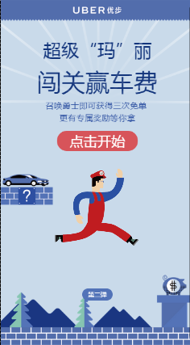
-
承启堂中医馆微信公众号项目 （公众号：承启堂中医馆）
参与承启堂中医管微信APP项目的前端开发工作，根据设计图完成兼容各个主流手机屏幕的页面。
使用 Ajax 和 CSS预处理器SASS 来实现前端组件及数据交互，使用Gulp自动化构建工具改进工作流。
-
OC艺术学校后台管理系统，承启堂中医馆后台管理系统等
参与制作OC艺术，承启堂等后台管理系统，调用接口实现业务逻辑和页面制作，维护修改bug.
成都百德邮政专用设备制造有线公司（2016.10-至今）
-
白德邮政微信公众号（公众号：百德邮政）
独立负责公众号的前端页面制作，页面兼容各大小屏幕，表现良好。日上线人数10万以上，与易邮柜配合，实现快递员注册查询等，取件人取件查询等，包括保修等功能。
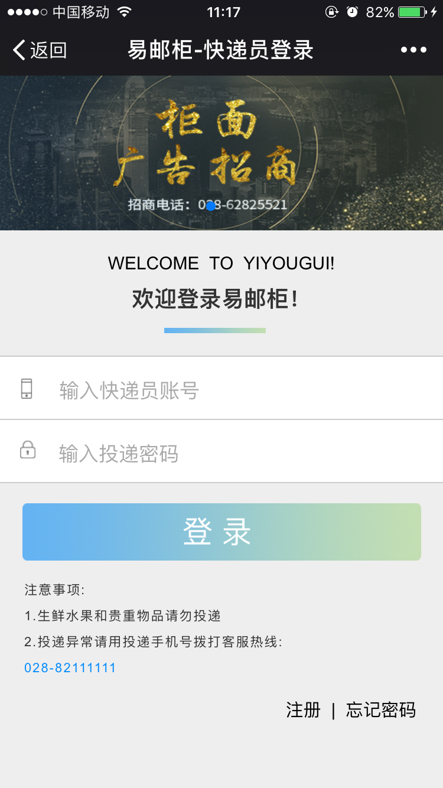 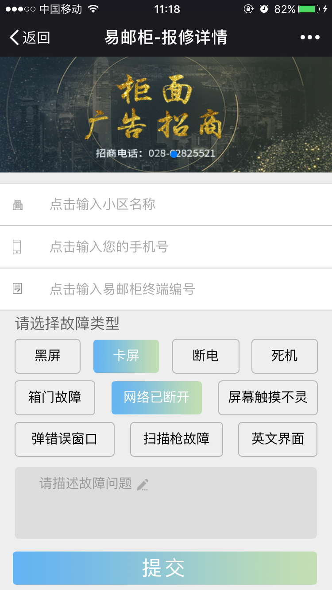 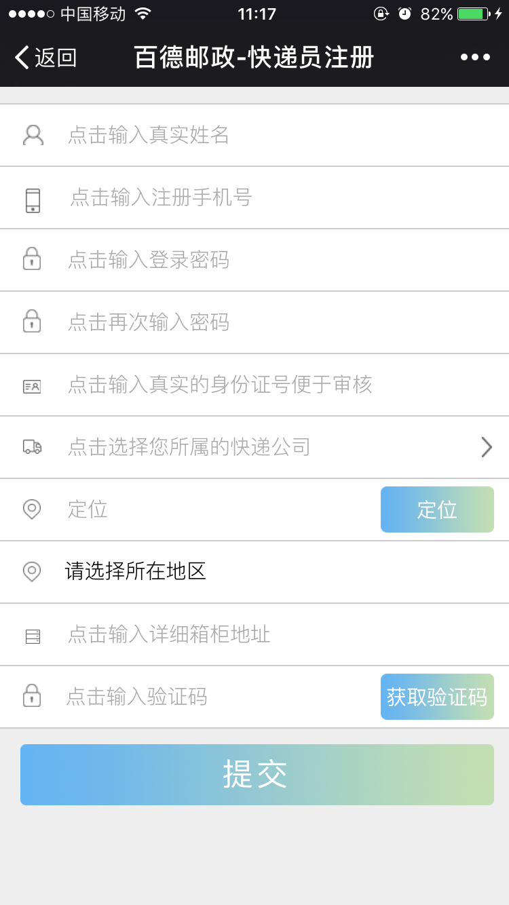
-
白德邮政移动端官网
独立负责百德邮政移动端官网设计与制作，实现在个屏幕表现良好且大方美观的页面制作。
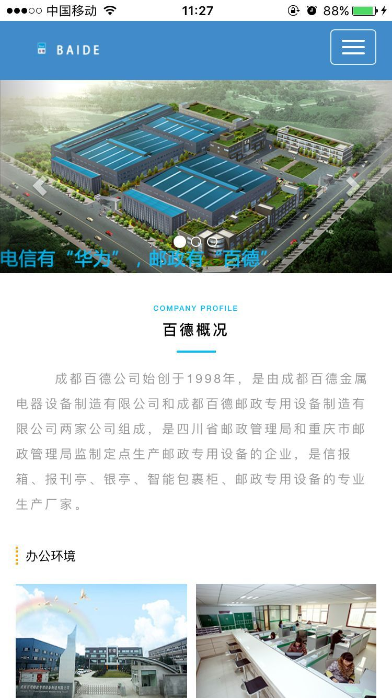 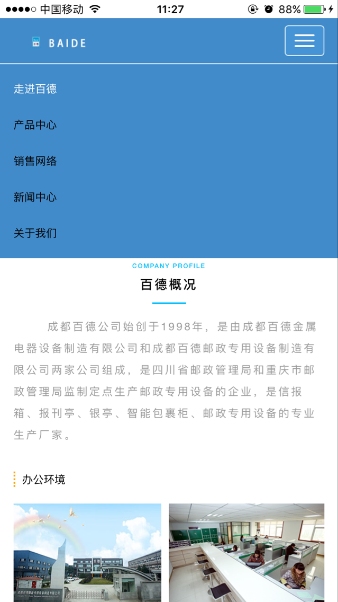 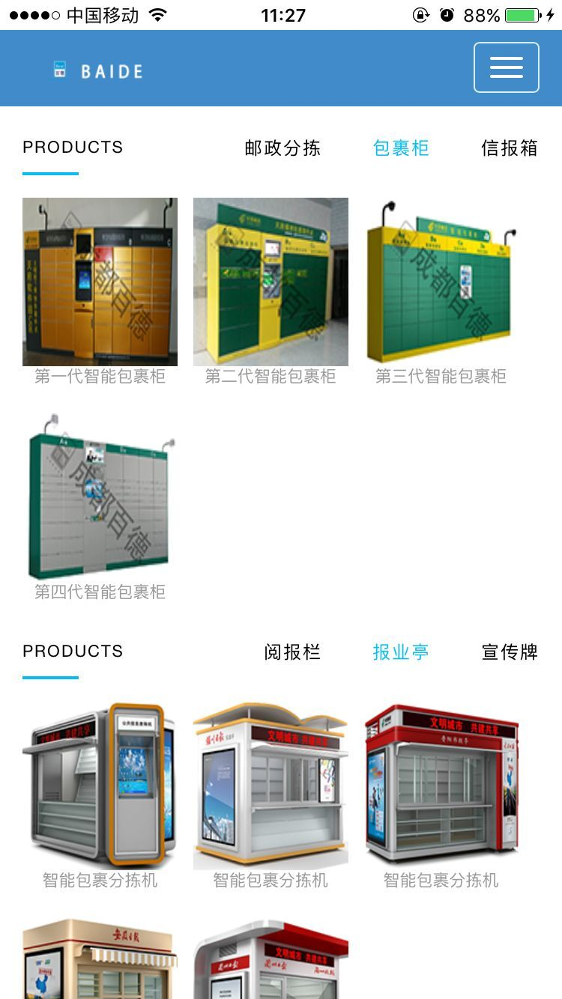 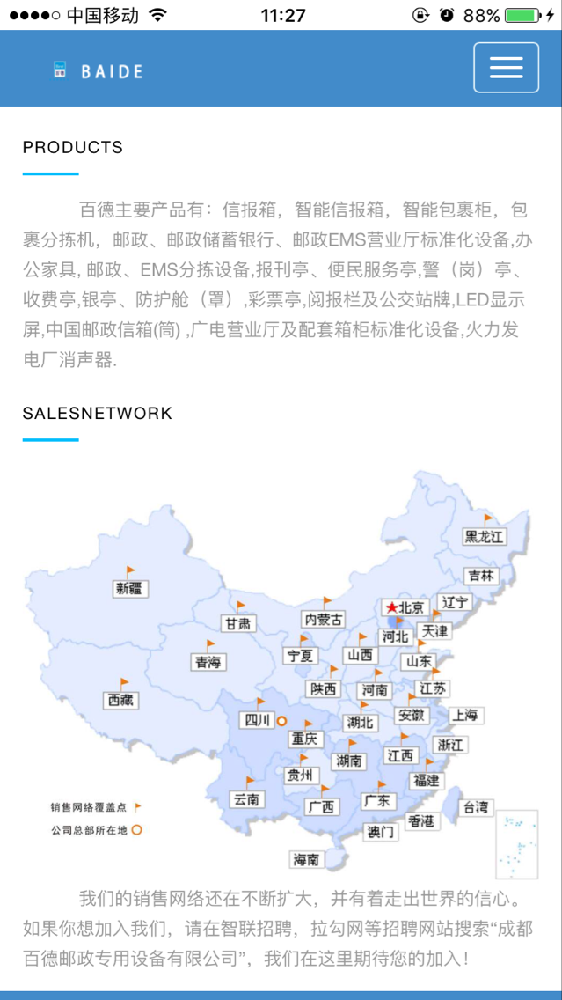 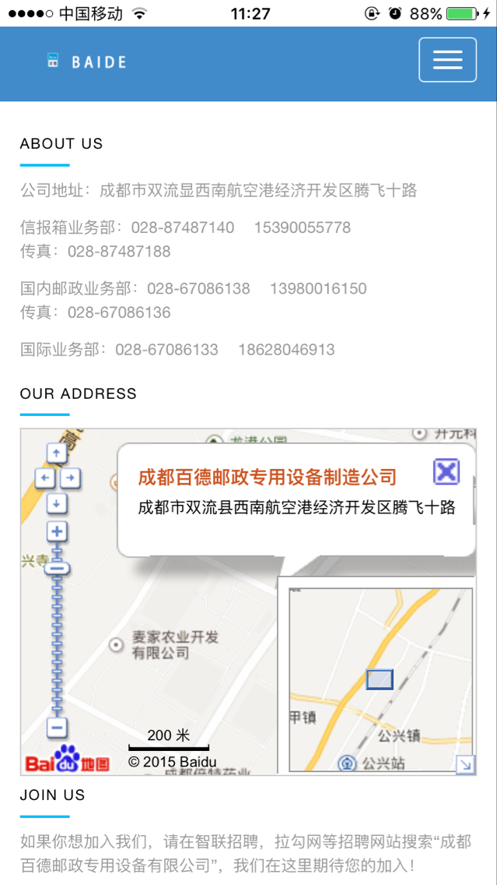
-
邮政政讯通项目
负责在安卓终端和QT终端的首页制作
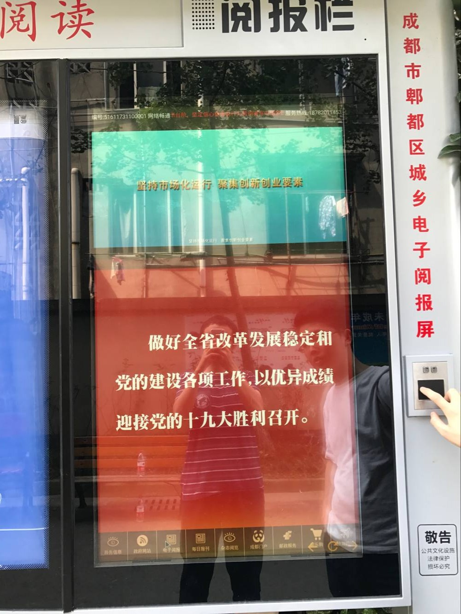
个人项目
-
煤矿检测网站
集成百度地图，多点标注，地里围栏，多点聚合等功能，实现数据展示与交互响应。
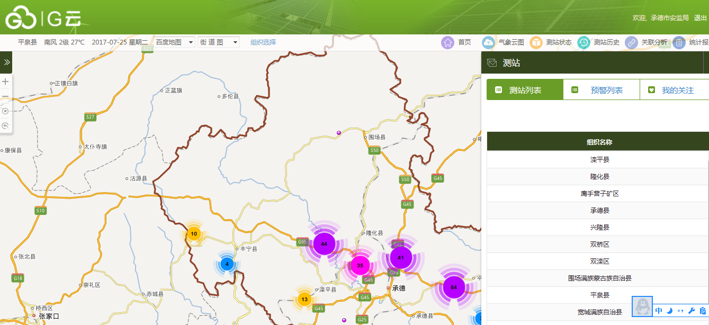 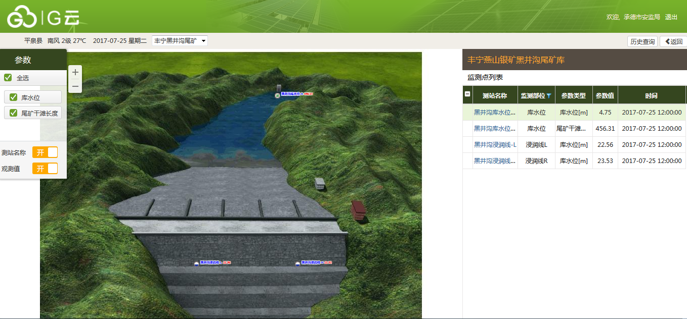
-
- Skill. 技能清单
Web前端
-
HTML / CSS
能够编写语义化的 HTML，模块化的 CSS，完成较复杂的布局
熟悉 Less / Sass 等CSS预处理和后处理方法、工具
-
JavaScript
熟悉原生Javascript，熟练使用jQuery，bootstrap等类库编码
能熟练使用jq实现业务逻辑等
了解Vue.js的使用
-
其他
熟悉 Bower Gulp 前端自动化工具
其他
-
是一个有趣的人，并希望自己称为一个敲得了代码，改得了bug，同时进得了厨房，出得了厅堂的当代女性。
严重强迫症，不能忍受界面一个像素的偏差，同样不能忍受代码格式一个空格的偏差
学习能力强，以上绝大多数的技能都是自学而成。
业余时间喜欢素描，游泳等
喜欢交朋友，但前提是对方得是个有趣的人